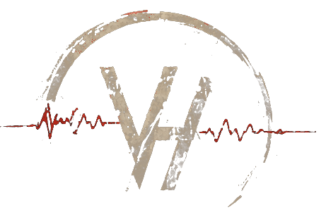

Listening
Bridge mixShip ambience is generated live in your browser: drive, ventilation, structure, consoles and galley appliances. It starts only when you ask.

VOX HUMANAShip ambience is generated live in your browser: drive, ventilation, structure, consoles and galley appliances. It starts only when you ask.
This channel is reserved for dispatches. None have been approved for publication yet.
The hatches aboard are manual. Nothing opens until you open it.
You are standing on the bridge, behind the pilot cradle. The galley is aft: through the bridge hatch, down the primary corridor, past the turn toward the storage spine, around the elbow.
The hatches are manual. Walk up to one and press E, or tap Use.
Loading ship geometry…
Generated live in your browser with Web Audio synthesis. No recordings.